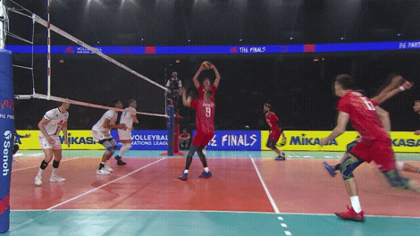

Estimula a sinapse dos neurônios, pois precisa estudar a jogada, o adversário, o time;
Melhora a cognição, porque necessita ter a percepção rápida da jogada;
Fortalece o corpo, estimula os membros superiores e inferiores, aumentando a flexibilidade e a coordenação motora;
Dentre outros.

Voleibol na pandemia
Por se tratar de um esporte em equipe, mas precisamento com 12 pessoas em campo, 6 por equipe, o voleibol sofreu muito com a
pandemia, principalmente os jogadores profissionais, o distanciamento fez com que no geral houvesse perda na qualidade de vida, saúde mental e física.
A pandemia está chegando ao fim, e para aqueles que gostam de esportes, o voleibol é uma ótima aposta, tanto em questão de
qualidade de vida e saúde, como em diversão!